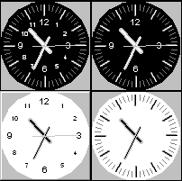
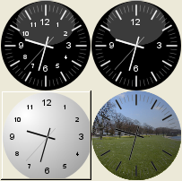
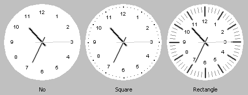
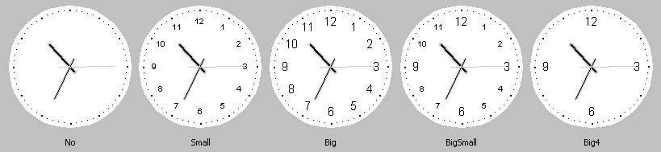
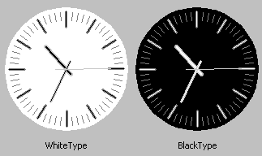

|
class StaticClock : public Ctrl
As seen in layout designer:

As seen in program:

StaticClock shows a clock running at real time.
StaticClock()
Initializes StaticClock.
StaticClock& SetImage(String fileName)
Sets image in file fileName as the clock background.
StaticClock& SetImage(Image image)
Sets image as the clock background.
StaticClock& SetHourType(int type)
Sets the type of hour and minute marks.
Valid values are HourType::No, HourType::Square and HourType::Rectangle.

StaticClock& SetNumberType(int type)
Sets the type of hour numbers.
Valid values are NumberType::No, NumberType::Small, NumberType::Big, NumberType::BigSmall and NumberType::Big4.

StaticClock& SetColorType(int c)
Sets the color style.
Valid c color style values are ColorType::WhiteType and ColorType::BlackType.

StaticClock& Seconds(bool b)
If b is true the seconds handle will appear.
StaticClock& SetAuto(bool mode = true)
If mode.is true "auto" mode is activated, so that the clock will run by itself without the need of refreshing it every second or minute.
bool IsAuto()
Returns true if StaticClock is in "auto" mode
void SetData(const Value& v)
Sets the clock time as a value v.of type Time.
void SetTime(const Time& tm = GetSysTime())
Sets the clock time as Time tm.
void SetTime(int h, int n, int s)
Sets the clock time as hours h, minutes n and seconds s.
|
{kind=link}
{kind=link}
{kind=link}
{kind=link}
{kind=link}